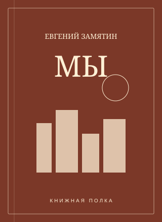
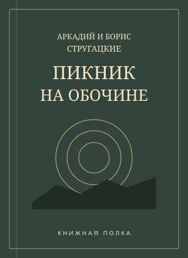
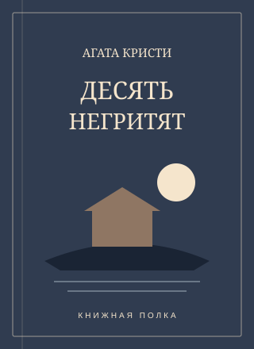

01 / Что я умею
Навыки
Внимание к деталям- Литературный анализ
- Написание рецензий и эссе
- Работа с источниками
02 / Моя маленькая библиотека
Книги на полке
Три истории, к которым возвращаюсь

Прочитано
Мы
О свободе выбора в мире, где всё уже решено.

Прочитано
Пикник на обочине
О неизвестном, человеческих желаниях и их цене.

В процессе
Десять негритят
Перечитываю и ищу подсказки, пропущенные в первый раз.
03 / Сохранить в памяти
Цитаты недели
Мы все учились понемногу,
Чему-нибудь и как-нибудь.
Счастливые часов не наблюдают.
И какой же русский не любит быстрой езды?
04 / Из книги в историю
Проекты
Книги, по которым я бы снял фильм или написал продолжение.
Наведите на карточку или выберите её клавишей Tab, чтобы прочитать идею. На телефоне нажмите на карточку.
05 / Продолжим разговор
Обратная связь
Учебная форма: данные никуда не отправляются.